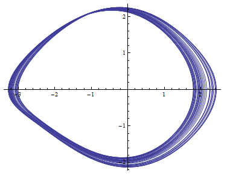
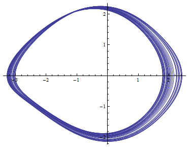

Without any forces acting on it, a normal pendulum with swing back and forth forever. When you damp a pendulum, you add something like friction to slow it down and eventually it will stop. When you drive a pendulum, you add a force to it at some frequency to keep it from stopping. Depending on how much you drive and damp the pendulum, different behaviours can be observed. When the drive strength and damping exactly cancel out, the pendulum has a well-defined period of oscillation. When you increase the drive strength, the period doubles at a particular value. If you increase it some more, the period will double again. Eventually, the motion will become chaotic, meaning the period is effectively infinite and the state of the system never repeats. Pictured are phase space diagrams for the pendulum at different drive strengths showing period doubling and eventual chaos and some example python code.
 
